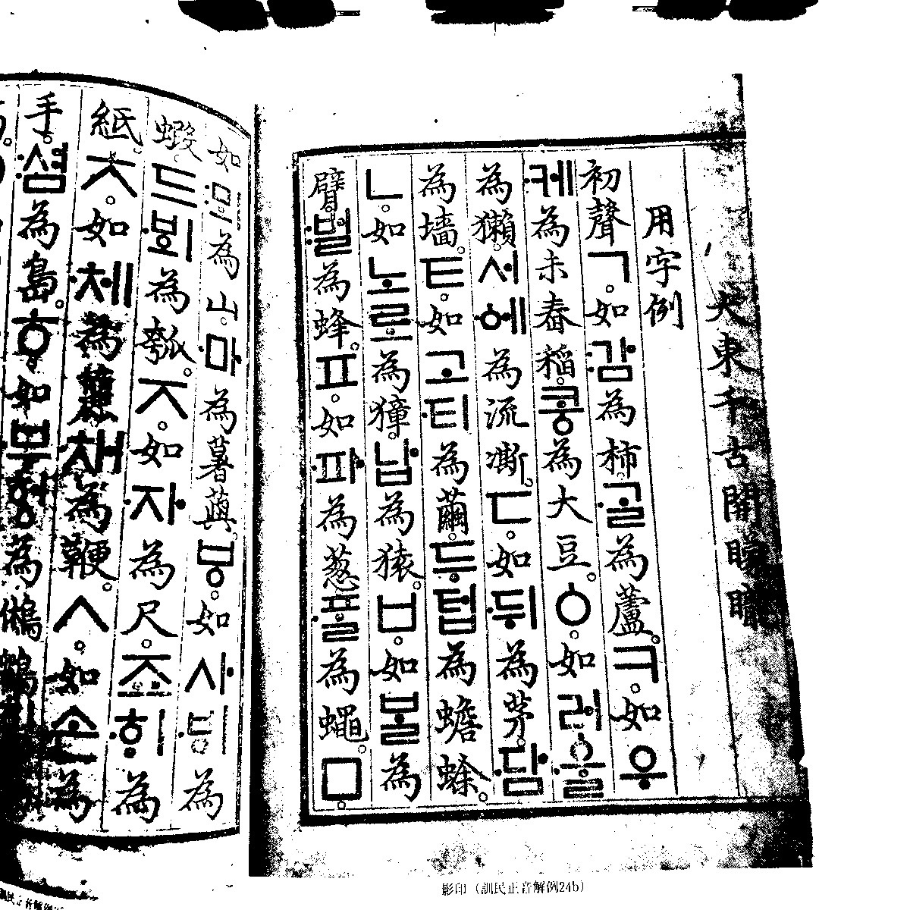
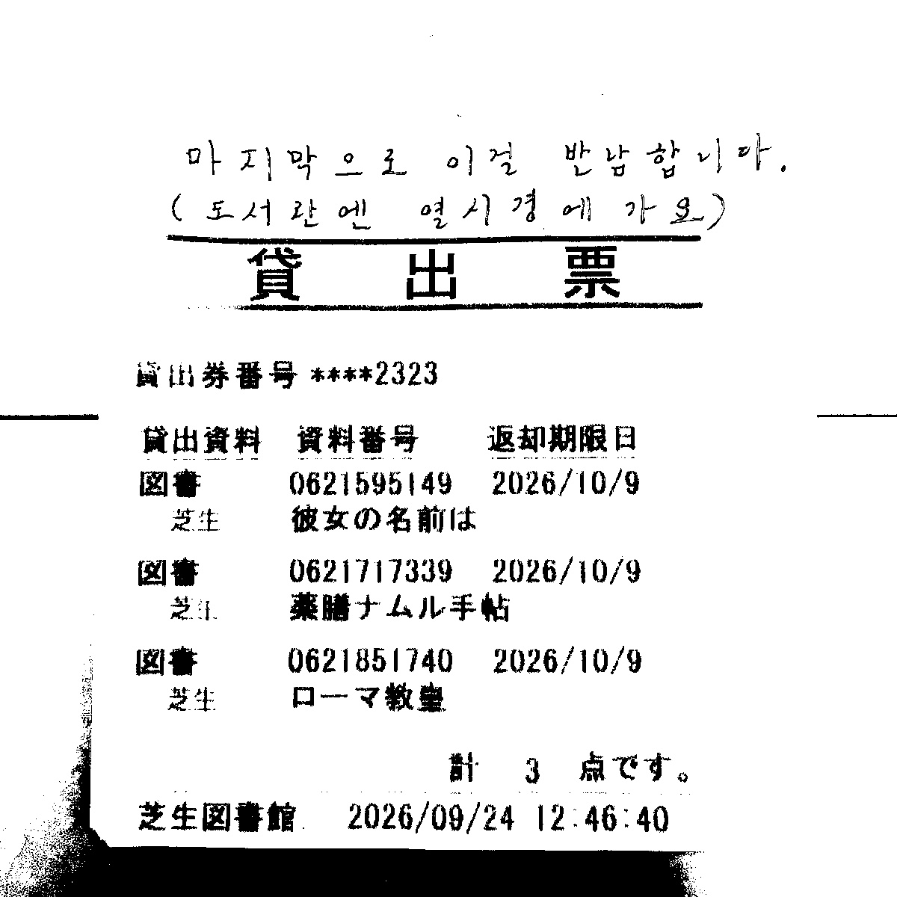

26. 10. 9
냉장고에 있는 파스타면은 오늘 처분하고 내일부터 대한민국으로 출발할 날까지 더 한국인처럼 식사를 하기로 합니다. 안녕히 주무세요 한국인이시고 아마존 KIX3에서 일을 하신 Lee씨, 제가 사랑하는 유일하신 분.
https://drive.google.com/file/d/1BJ4QYMFDXdflrEMdJXSC3c1Wqeqbthqp/view?usp=drivesdk
제가 최근에 쓴 글이 오해를 주었을 수도 있으니까 한글날 이전에 쓴 글을 다 삭제하기로 합니다. (그 영화는 단지 제가 처음으로 영화관에서 본 한국 영화였지만 같은 비행기를 타시는 분들이 무서워하실지도 모릅미다) 아마 당신은 이미 아시는 것이니까 문제 없을 것이라고 보고 있습니다. 그리고 제가 한국에 도착한 후에 일본을 떠나기 전에 쓴 글을 대부분 정리할 것입니다.
제가 오늘 아침에 부엌을 촬영했을 때 다음과 같은 뉴스를 사용한 건 지금 미국이 마치 북한과 같게 되었다고 주장하고 싶었기 때문이랍니다. (북한에선 아마 지금도 총살형이 인민들에게 공개돼 있는데요) 다만 아마 오해를 주었을 것이니까 역시 내일부터 다시 DJI나 날씨 뉴스를 사용하기로 합니다.
미 국방부, 13명 살해한 군인 총살형 생중계 방침…“중세시대나 있을 일” 비판
https://www.hani.co.kr/arti/international/america/1281651.html
그리고 어제 사용한 뉴스에 관해서도 설명해 봅니다. 아마 당신도 아시는 것인데요 저는 옛날부터 인도에 관심이 있었고 인도에 관한 일에 언급한 적도 여러번 있습니다. 저는 다카이치 씨에 대해선 반대도 찬성도 하지 않기로 했는데요. 일본은 일본 사람들의 나라이고 저는 일간에 한국인이 되거나 죽을 것이니까 이런 일과는 무관합니다.
그리고 오늘 아침에 편지를 썼을 때 정말로 저주를 받은 것처럼 기운이 없고 이상한 상태에 있었으니까 이런 일이 완성되었습니다. 오후에 다시 써 볼 수도 있어요.
제가 오늘 아침에 쓴 편지엔 다음을 참고로 하여 글을 써 봤는데요.

한겨레 신문을 읽어 봤는데요 이날이 한글날 100주년일 뿐만 아니라 훈민정음이 반포된 지 580돌이라고도 합니다.
한글날 100주년, 훈민정음 반포 580돌 [.txt]
https://www.hani.co.kr/arti/culture/book/1281602.html
오늘은 이제부터 일본어를 사용하지 않기로 했습니다.
일제 탄압 속 지켜낸 우리말…풍성한 '한글날 100돌' 특집방송
https://www.yna.co.kr/view/AKR20261008211200005
좀 신문을 읽어 보겠습니다.
https://drive.google.com/file/d/1pHIFX3Gkw05ZRbu9FXv4B8QBehxS58NT/view?usp=drivesdk

오늘의 부엌 영상:
https://drive.google.com/file/d/17WVZbSH9wnxQFnwoBpFvk3-qF5yqfA_B/view?usp=drivesdk
https://drive.google.com/file/d/1sIUuJZIYhkyZ2U5VPi1ytt2Aec35pmQH/view?usp=drivesdk
元米軍医の銃殺刑、異例の中継へ 12月3日執行
https://www.reuters.com/jp/world/us/Y63I3QA7YBLB7F3PPYC5BJ6RMQ-2026-10-08/
下記手順はソルラル連休に合わせて作成したものですが、ハングルの日(今日10/9)に裁判が開かれないこともこれで確認が可能ですので試してみて下さい。
STEP1: 下記の検索用キーワードをコピーして下さい。
오늘의 주요일정 법조
STEP2: 下記のリンクにアクセスして検索欄(モバイル版ではメニューの中にあります)に先ほどコピーしたキーワードを貼り付けて下さい。
https://www.newsis.com/
日本の皆様が「韓国ではソルラル連休中に裁判所も休む」ということを確認する為のツール
https://anissatta.github.io/home-project/kim2/
안녕하세요? 어젯밤에 꾼 꿈 속에서 '한 일본 사람의 친척까지 해를 주러 올 수도 있다'는 느낌이 들었습니다. 오늘도 오전 10시경에 마르야스에 가요.
先日尹前大統領や曺大法院長に関して述べたことは金建希についても言えるのではないかと思いますが、日本の皆様にお願いしたいのは経緯を理解した上で判断し噂を流して下さいということです。最近金建希の健康状態について国民からの問合せが殺到しているといったニュースが出ていましたが(といっても1000件程度だそうですが)、このニュースはそもそも尹夫婦に批判的な(民主党の)発言の中で出てきたものなのです。拘束期間が10月末であることを考えると金建希釈放を狙った尹前大統領の支持者らによる工作である可能性もあるかと思います。また下記記事によると金建希は拘置所が提供する食事に加えて領置金(영치금)で購入した食品をも食べているそうです。
8일 더불어민주당 김의겸 의원실이 법무부로부터 제출받은 자료에 따르면 지난 7월 27일부터 8월 14일까지 19일 동안 서울남부구치소에 접수된 김 씨의 건강 상태 관련 민원은 모두 961건에 달했다. (中略) 앞서 지난 8월 서울고법 형사15-3부 심리로 열린 김 씨의 특정범죄 가중처벌법상 알선수재 혐의 항소심 첫 공판에서 정지원 전 대통령실 행정관은 김 씨의 건강 상태에 대해 “하루 종일 누워만 계셔야 하고 식사를 거의 안 하셔서 일어설 기력도 없다”는 취지로 증언했다. 하지만 김 의원실이 확보한 구치소 내부 보고서에는 다소 다른 내용이 담겼다. 김 씨는 지난 8월 어지럼증을 호소해 수액 처치를 받은 것으로 파악됐다. 다만 식사와 관련해서는 구치소에서 제공하는 단체식을 선택적으로 먹었고, 영치금으로 구매한 식품도 취식한 것으로 기록됐다. 건강 이상이 전혀 없었다는 의미는 아니지만, 법정에서 나온 ‘거의 식사를 하지 못하고 일어설 기력도 없다’는 증언과는 온도 차가 있다는 것이다. 논란은 김 씨의 구속 기간 만료 시점과 맞물리면서 정치권으로 번지고 있다. 김 씨의 3대 의혹 사건 상고심 구속 기간 만료일은 오는 31일이다. 구속 상태로 재판을 계속할 수 있는 시간이 얼마 남지 않은 가운데 건강 상태를 둘러싼 민원이 대규모로 제기된 사실이 드러난 것이다. 야권에서는 이를 두고 김 씨의 건강 문제를 향후 석방이나 보석의 명분으로 활용하려는 것 아니냐는 의혹까지 제기하고 있다. 김의겸 의원은 “김건희씨 식사 걱정 등 민원으로 교정 공무원들이 일반 수용자에게 써야 할 시간마저 빼앗기고 있다”며 “향후 석방 등의 특혜 명분으로 오인되거나 악용돼서는 안 되며 모든 수용자에 동일하고 엄정한 원칙 적용이 필요하다”고 질타했다. 김씨의 구속 기간 관련 부분은 지난 6일 대법원 국정감사에서도 언급된 바 있다. 민주당 박균택 의원은 그날 조희대 대법원장을 향해 김 씨의 재판이 10월 31일까지 선고되지 않으면 석방될 수 있다는 점을 거론했다. 박 의원은 “세간에는 김건희를 풀어주려고 사건을 전원합의체로 가져가서 시간을 끄는 명분을 삼는 것 아니냐고 의심하는 시각도 있다”며 “그런 오해를 받으면 안 될 것”이라고 지적했다. 이어 선고 시점을 물었지만 조 대법원장은 답변하지 않았다.
(10. 8) “식사 못해” 김건희 안부 민원 폭증…구치소 보고서엔 “영치금으로 사먹어”
https://m.mk.co.kr/amp/12171650
下記は尹夫婦が受け取った領置金(영치금)についての記事です。
윤석열 전 대통령과 김건희 여사 부부가 작년 구속된 이후 대통령 연봉의 8배에 달하는 영치금을 받은 것으로 나타났다.
(10. 8) 윤석열·김건희, 1년여간 영치금 21억원…"대통령 연봉 8배"(종합)
https://www.yna.co.kr/view/AKR20261008208151004
(再揭) クロネコヤマトについてもう一度書いておくと、噂を流していたと思われる契約社員(灰色の制服を着た社員)は関西ゲートウェイ(茨木にあるセンター)にて私が派遣社員として夕方から午後10時頃まで働いていた際に、クールでないフロアのA(アルファ)ブロックにいた方です。私が韓国のLeeさんと結婚した場合にどのような仕事をするのかは分かりませんが、場合によってはクロネコヤマトが困ることになるかも知れません。最近気になっているのはクロネコヤマトのドライバーの方々です。恐らく私が買い物等に出かける時刻は把握されていると思いますが、あまりに頻繁に見かけるので本来の業務指示を無視して私を偵察しに来ているのではないかとも思います。